Factorials and gamma functions¶
Factorials¶
factorial()/fac()¶
- mpmath.functions.factorial(x, **kwargs)¶
Computes the factorial, 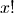. For integers
 , we have
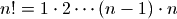 and more generally the factorial
is defined for real or complex
, we have
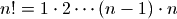 and more generally the factorial
is defined for real or complex  by 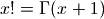.
by 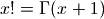.Examples
Basic values and limits:
>>> from mpmath import * >>> mp.dps = 15; mp.pretty = True >>> for k in range(6): ... print k, fac(k) ... 0 1.0 1 1.0 2 2.0 3 6.0 4 24.0 5 120.0 >>> fac(inf) +inf >>> fac(0.5), sqrt(pi)/2 (0.886226925452758, 0.886226925452758)
For large positive
, can be approximated by
Stirling’s formula:>>> x = 10**10 >>> fac(x) 2.32579620567308e+95657055186 >>> sqrt(2*pi*x)*(x/e)**x 2.32579597597705e+95657055186
fac() supports evaluation for astronomically large values:
>>> fac(10**30) 6.22311232304258e+29565705518096748172348871081098
Reciprocal factorials appear in the Taylor series of the exponential function (among many other contexts):
>>> nsum(lambda k: 1/fac(k), [0, inf]), exp(1) (2.71828182845905, 2.71828182845905) >>> nsum(lambda k: pi**k/fac(k), [0, inf]), exp(pi) (23.1406926327793, 23.1406926327793)
fac2()¶
- mpmath.functions.fac2(x)¶
Computes the double factorial 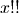, defined for integers 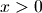 by
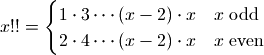
and more generally by [1]
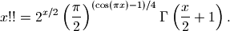
Examples
The integer sequence of double factorials begins:
>>> from mpmath import * >>> mp.dps = 15; mp.pretty = True >>> nprint([fac2(n) for n in range(10)]) [1.0, 1.0, 2.0, 3.0, 8.0, 15.0, 48.0, 105.0, 384.0, 945.0]
For large
, double factorials follow a Stirling-like asymptotic
approximation:>>> x = mpf(10000) >>> fac2(x) 5.97272691416282e+17830 >>> sqrt(pi)*x**((x+1)/2)*exp(-x/2) 5.97262736954392e+17830
The recurrence formula 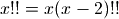 can be reversed to define the double factorial of negative odd integers (but not negative even integers):
>>> fac2(-1), fac2(-3), fac2(-5), fac2(-7) (1.0, -1.0, 0.333333333333333, -0.0666666666666667) >>> fac2(-2) Traceback (most recent call last): ... ValueError: gamma function pole
With the exception of the poles at negative even integers, fac2() supports evaluation for arbitrary complex arguments. The recurrence formula is valid generally:
>>> fac2(pi+2j) (-1.3697207890154e-12 + 3.93665300979176e-12j) >>> (pi+2j)*fac2(pi-2+2j) (-1.3697207890154e-12 + 3.93665300979176e-12j)
Double factorials should not be confused with nested factorials, which are immensely larger:
>>> fac(fac(20)) 5.13805976125208e+43675043585825292774 >>> fac2(20) 3715891200.0
Double factorials appear, among other things, in series expansions of Gaussian functions and the error function. Infinite series include:
>>> nsum(lambda k: 1/fac2(k), [0, inf]) 3.05940740534258 >>> sqrt(e)*(1+sqrt(pi/2)*erf(sqrt(2)/2)) 3.05940740534258 >>> nsum(lambda k: 2**k/fac2(2*k-1), [1, inf]) 4.06015693855741 >>> e * erf(1) * sqrt(pi) 4.06015693855741
A beautiful Ramanujan sum:
>>> nsum(lambda k: (-1)**k*(fac2(2*k-1)/fac2(2*k))**3, [0,inf]) 0.90917279454693 >>> (gamma('9/8')/gamma('5/4')/gamma('7/8'))**2 0.90917279454693
References
Binomial coefficients¶
binomial()¶
- mpmath.functions.binomial(n, k)¶
Computes the binomial coefficient
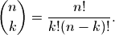
The binomial coefficient gives the number of ways that
 items
can be chosen from a set of
items
can be chosen from a set of  items. More generally, the binomial
coefficient is a well-defined function of arbitrary real or
complex and , via the gamma function.
items. More generally, the binomial
coefficient is a well-defined function of arbitrary real or
complex and , via the gamma function.Examples
Generate Pascal’s triangle:
>>> from mpmath import * >>> mp.dps = 15; mp.pretty = True >>> for n in range(5): ... nprint([binomial(n,k) for k in range(n+1)]) ... [1.0] [1.0, 1.0] [1.0, 2.0, 1.0] [1.0, 3.0, 3.0, 1.0] [1.0, 4.0, 6.0, 4.0, 1.0]
There is 1 way to select 0 items from the empty set, and 0 ways to select 1 item from the empty set:
>>> binomial(0, 0) 1.0 >>> binomial(0, 1) 0.0
binomial() supports large arguments:
>>> binomial(10**20, 10**20-5) 8.33333333333333e+97 >>> binomial(10**20, 10**10) 2.60784095465201e+104342944813
Nonintegral binomial coefficients find use in series expansions:
>>> nprint(taylor(lambda x: (1+x)**0.25, 0, 4)) [1.0, 0.25, -9.375e-2, 5.46875e-2, -3.75977e-2] >>> nprint([binomial(0.25, k) for k in range(5)]) [1.0, 0.25, -9.375e-2, 5.46875e-2, -3.75977e-2]
An integral representation:
>>> n, k = 5, 3 >>> f = lambda t: exp(-j*k*t)*(1+exp(j*t))**n >>> chop(quad(f, [-pi,pi])/(2*pi)) 10.0 >>> binomial(n,k) 10.0
Gamma function¶
gamma()¶
- mpmath.functions.gamma(x, **kwargs)¶
Computes the gamma function, 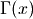. The gamma function is a shifted version of the ordinary factorial, satisfying 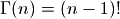 for integers 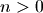. More generally, it is defined by
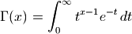
for any real or complex
with 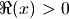 and for 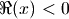
by analytic continuation.Examples
Basic values and limits:
>>> from mpmath import * >>> mp.dps = 15; mp.pretty = True >>> for k in range(1, 6): ... print k, gamma(k) ... 1 1.0 2 1.0 3 2.0 4 6.0 5 24.0 >>> gamma(inf) +inf >>> gamma(0) Traceback (most recent call last): ... ValueError: gamma function pole
The gamma function of a half-integer is a rational multiple of 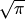:
>>> gamma(0.5), sqrt(pi) (1.77245385090552, 1.77245385090552) >>> gamma(1.5), sqrt(pi)/2 (0.886226925452758, 0.886226925452758)
We can check the integral definition:
>>> gamma(3.5) 3.32335097044784 >>> quad(lambda t: t**2.5*exp(-t), [0,inf]) 3.32335097044784
gamma() supports arbitrary-precision evaluation and complex arguments:
>>> mp.dps = 50 >>> gamma(sqrt(3)) 0.91510229697308632046045539308226554038315280564184 >>> mp.dps = 25 >>> gamma(2j) (0.009902440080927490985955066 - 0.07595200133501806872408048j)
Arguments can also be large. Note that the gamma function grows very quickly:
>>> mp.dps = 15 >>> gamma(10**20) 1.9328495143101e+1956570551809674817225
gammaprod()¶
- mpmath.functions.gammaprod(a, b)¶
Given iterables
 and 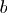, gammaprod(a, b) computes the
product / quotient of gamma functions:
and 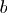, gammaprod(a, b) computes the
product / quotient of gamma functions: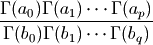
Unlike direct calls to gamma(), gammaprod() considers the entire product as a limit and evaluates this limit properly if any of the numerator or denominator arguments are nonpositive integers such that poles of the gamma function are encountered. That is, gammaprod() evaluates
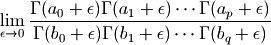
In particular:
- If there are equally many poles in the numerator and the denominator, the limit is a rational number times the remaining, regular part of the product.
- If there are more poles in the numerator, gammaprod() returns +inf.
- If there are more poles in the denominator, gammaprod() returns 0.
Examples
The reciprocal gamma function 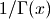 evaluated at
 :
:>>> from mpmath import * >>> mp.dps = 15 >>> gammaprod([], [0]) 0.0
A limit:
>>> gammaprod([-4], [-3]) -0.25 >>> limit(lambda x: gamma(x-1)/gamma(x), -3, direction=1) -0.25 >>> limit(lambda x: gamma(x-1)/gamma(x), -3, direction=-1) -0.25
loggamma()¶
- mpmath.functions.loggamma(x)¶
Computes the log-gamma function. Unlike
 , which
has infinitely many complex branch cuts, the log-gamma function
only has a single branch cut along the negative half-axis.
The functions are identical only on (and very close to) the positive
half-axis; elsewhere they differ by 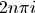 (the real parts
agree):
, which
has infinitely many complex branch cuts, the log-gamma function
only has a single branch cut along the negative half-axis.
The functions are identical only on (and very close to) the positive
half-axis; elsewhere they differ by 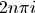 (the real parts
agree):>>> from mpmath import * >>> mp.dps = 15; mp.pretty = True >>> loggamma(13.2), log(gamma(13.2)) (20.494004194566, 20.494004194566) >>> loggamma(3+4j) (-1.75662678460378 + 4.74266443803466j) >>> log(gamma(3+4j)) (-1.75662678460378 - 1.54052086914493j)
Note: this is a placeholder implementation. It is slower than gamma(), and is in particular not faster than gamma() for large arguments.
Rising and falling factorials¶
rf()¶
- mpmath.functions.rf(x, n)¶
Computes the rising factorial or Pochhammer symbol,
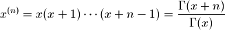
where the rightmost expression is valid for nonintegral
.Examples
For integral
, the rising factorial is a polynomial:>>> from mpmath import * >>> mp.dps = 15; mp.pretty = True >>> for n in range(5): ... nprint(taylor(lambda x: rf(x,n), 0, n)) ... [1.0] [0.0, 1.0] [0.0, 1.0, 1.0] [0.0, 2.0, 3.0, 1.0] [0.0, 6.0, 11.0, 6.0, 1.0]
Evaluation is supported for arbitrary arguments:
>>> rf(2+3j, 5.5) (-7202.03920483347 - 3777.58810701527j)
ff()¶
- mpmath.functions.ff(x, n)¶
Computes the falling factorial,
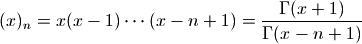
where the rightmost expression is valid for nonintegral
.Examples
For integral
, the falling factorial is a polynomial:>>> from mpmath import * >>> mp.dps = 15; mp.pretty = True >>> for n in range(5): ... nprint(taylor(lambda x: ff(x,n), 0, n)) ... [1.0] [0.0, 1.0] [0.0, -1.0, 1.0] [0.0, 2.0, -3.0, 1.0] [0.0, -6.0, 11.0, -6.0, 1.0]
Evaluation is supported for arbitrary arguments:
>>> ff(2+3j, 5.5) (-720.41085888203 + 316.101124983878j)
Beta function¶
beta()¶
- mpmath.functions.beta(x, y)¶
Computes the beta function, 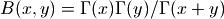. The beta function is also commonly defined by the integral representation
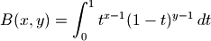
Examples
For integer and half-integer arguments where all three gamma functions are finite, the beta function becomes either rational number or a rational multiple of
 :
:>>> from mpmath import * >>> mp.dps = 15; mp.pretty = True >>> beta(5, 2) 0.0333333333333333 >>> beta(1.5, 2) 0.266666666666667 >>> 16*beta(2.5, 1.5) 3.14159265358979
Where appropriate, beta() evaluates limits. A pole of the beta function is taken to result in +inf:
>>> beta(-0.5, 0.5) 0.0 >>> beta(-3, 3) -0.333333333333333 >>> beta(-2, 3) +inf >>> beta(inf, 1) 0.0 >>> beta(inf, 0) nan
beta() supports complex numbers and arbitrary precision evaluation:
>>> beta(1, 2+j) (0.4 - 0.2j) >>> mp.dps = 25 >>> beta(j,0.5) (1.079424249270925780135675 - 1.410032405664160838288752j) >>> mp.dps = 50 >>> beta(pi, e) 0.037890298781212201348153837138927165984170287886464
Various integrals can be computed by means of the beta function:
>>> mp.dps = 15 >>> quad(lambda t: t**2.5*(1-t)**2, [0, 1]) 0.0230880230880231 >>> beta(3.5, 3) 0.0230880230880231 >>> quad(lambda t: sin(t)**4 * sqrt(cos(t)), [0, pi/2]) 0.319504062596158 >>> beta(2.5, 0.75)/2 0.319504062596158
betainc()¶
- mpmath.functions.betainc(a, b, x1=0, x2=1, regularized=False)¶
betainc(a, b, x1=0, x2=1, regularized=False) gives the generalized incomplete beta function,
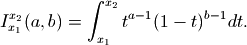
When
 , this reduces to the ordinary (complete)
beta function 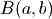; see beta().
, this reduces to the ordinary (complete)
beta function 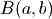; see beta().With the keyword argument regularized=True, betainc() computes the regularized incomplete beta function 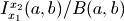. This is the cumulative distribution of the beta distribution with parameters
, .Note: implementations of the incomplete beta function in some other software uses a different argument order. For example, Mathematica uses the reversed argument order Beta[x1,x2,a,b]. For the equivalent of SciPy’s three-argument incomplete beta integral (implicitly with 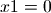), use betainc(a,b,0,x2,regularized=True).
Examples
Verifying that betainc() computes the integral in the definition:
>>> from mpmath import * >>> mp.dps = 25; mp.pretty = True >>> x,y,a,b = 3, 4, 0, 6 >>> betainc(x, y, a, b) -4010.4 >>> quad(lambda t: t**(x-1) * (1-t)**(y-1), [a, b]) -4010.4
The arguments may be arbitrary complex numbers:
>>> betainc(0.75, 1-4j, 0, 2+3j) (0.2241657956955709603655887 + 0.3619619242700451992411724j)
With regularization:
>>> betainc(1, 2, 0, 0.25, regularized=True) 0.4375 >>> betainc(pi, e, 0, 1, regularized=True) # Complete 1.0
The beta integral satisfies some simple argument transformation symmetries:
>>> mp.dps = 15 >>> betainc(2,3,4,5), -betainc(2,3,5,4), betainc(3,2,1-5,1-4) (56.0833333333333, 56.0833333333333, 56.0833333333333)
The beta integral can often be evaluated analytically. For integer and rational arguments, the incomplete beta function typically reduces to a simple algebraic-logarithmic expression:
>>> mp.dps = 25 >>> identify(chop(betainc(0, 0, 3, 4))) '-(log((9/8)))' >>> identify(betainc(2, 3, 4, 5)) '(673/12)' >>> identify(betainc(1.5, 1, 1, 2)) '((-12+sqrt(1152))/18)'
Super- and hyperfactorials¶
superfac()¶
- mpmath.functions.superfac(z)¶
Computes the superfactorial, defined as the product of consecutive factorials
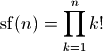
For general complex
 , 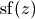 is defined
in terms of the Barnes G-function (see barnesg()).
, 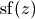 is defined
in terms of the Barnes G-function (see barnesg()).Examples
The first few superfactorials are (OEIS A000178):
>>> from mpmath import * >>> mp.dps = 15; mp.pretty = True >>> for n in range(10): ... print n, superfac(n) ... 0 1.0 1 1.0 2 2.0 3 12.0 4 288.0 5 34560.0 6 24883200.0 7 125411328000.0 8 5.05658474496e+15 9 1.83493347225108e+21
Superfactorials grow very rapidly:
>>> superfac(1000) 3.24570818422368e+1177245 >>> superfac(10**10) 2.61398543581249e+467427913956904067453
Evaluation is supported for arbitrary arguments:
>>> mp.dps = 25 >>> superfac(pi) 17.20051550121297985285333 >>> superfac(2+3j) (-0.005915485633199789627466468 + 0.008156449464604044948738263j) >>> diff(superfac, 1) 0.2645072034016070205673056
References
hyperfac()¶
- mpmath.functions.hyperfac(z)¶
Computes the hyperfactorial, defined for integers as the product
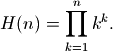
The hyperfactorial satisfies the recurrence formula 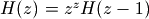. It can be defined more generally in terms of the Barnes G-function (see barnesg()) and the gamma function by the formula
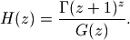
The extension to complex numbers can also be done via the integral representation
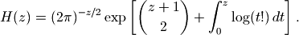
Examples
The rapidly-growing sequence of hyperfactorials begins (OEIS A002109):
>>> from mpmath import * >>> mp.dps = 15; mp.pretty = True >>> for n in range(10): ... print n, hyperfac(n) ... 0 1.0 1 1.0 2 4.0 3 108.0 4 27648.0 5 86400000.0 6 4031078400000.0 7 3.3197663987712e+18 8 5.56964379417266e+25 9 2.15779412229419e+34
Some even larger hyperfactorials are:
>>> hyperfac(1000) 5.46458120882585e+1392926 >>> hyperfac(10**10) 4.60408207642219e+489142638002418704309
The hyperfactorial can be evaluated for arbitrary arguments:
>>> hyperfac(0.5) 0.880449235173423 >>> diff(hyperfac, 1) 0.581061466795327 >>> hyperfac(pi) 205.211134637462 >>> hyperfac(-10+1j) (3.01144471378225e+46 - 2.45285242480185e+46j)
The recurrence property of the hyperfactorial holds generally:
>>> z = 3-4*j >>> hyperfac(z) (-4.49795891462086e-7 - 6.33262283196162e-7j) >>> z**z * hyperfac(z-1) (-4.49795891462086e-7 - 6.33262283196162e-7j) >>> z = mpf(-0.6) >>> chop(z**z * hyperfac(z-1)) 1.28170142849352 >>> hyperfac(z) 1.28170142849352
The hyperfactorial may also be computed using the integral definition:
>>> z = 2.5 >>> hyperfac(z) 15.9842119922237 >>> (2*pi)**(-z/2)*exp(binomial(z+1,2) + ... quad(lambda t: loggamma(t+1), [0, z])) 15.9842119922237
hyperfac() supports arbitrary-precision evaluation:
>>> mp.dps = 50 >>> hyperfac(10) 215779412229418562091680268288000000000000000.0 >>> hyperfac(1/sqrt(2)) 0.89404818005227001975423476035729076375705084390942
References
barnesg()¶
- mpmath.functions.barnesg(z)¶
Evaluates the Barnes G-function, which generalizes the superfactorial (superfac()) and by extension also the hyperfactorial (hyperfac()) to the complex numbers in an analogous way to how the gamma function generalizes the ordinary factorial.
The Barnes G-function may be defined in terms of a Weierstrass product:
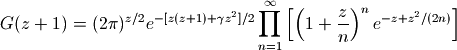
For positive integers
, we have have relation to superfactorials
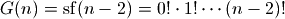.Examples
Some elementary values and limits of the Barnes G-function:
>>> from mpmath import * >>> mp.dps = 15; mp.pretty = True >>> barnesg(1), barnesg(2), barnesg(3) (1.0, 1.0, 1.0) >>> barnesg(4) 2.0 >>> barnesg(5) 12.0 >>> barnesg(6) 288.0 >>> barnesg(7) 34560.0 >>> barnesg(8) 24883200.0 >>> barnesg(inf) +inf >>> barnesg(0), barnesg(-1), barnesg(-2) (0.0, 0.0, 0.0)
Closed-form values are known for some rational arguments:
>>> barnesg('1/2') 0.603244281209446 >>> sqrt(exp(0.25+log(2)/12)/sqrt(pi)/glaisher**3) 0.603244281209446 >>> barnesg('1/4') 0.29375596533861 >>> nthroot(exp('3/8')/exp(catalan/pi)/ ... gamma(0.25)**3/sqrt(glaisher)**9, 4) 0.29375596533861
The Barnes G-function satisfies the functional equation 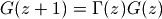:
>>> z = pi >>> barnesg(z+1) 2.39292119327948 >>> gamma(z)*barnesg(z) 2.39292119327948
The asymptotic growth rate of the Barnes G-function is related to the Glaisher-Kinkelin constant:
>>> limit(lambda n: barnesg(n+1)/(n**(n**2/2-mpf(1)/12)* ... (2*pi)**(n/2)*exp(-3*n**2/4)), inf) 0.847536694177301 >>> exp('1/12')/glaisher 0.847536694177301
The Barnes G-function can be differentiated in closed form:
>>> z = 3 >>> diff(barnesg, z) 0.264507203401607 >>> barnesg(z)*((z-1)*psi(0,z)-z+(log(2*pi)+1)/2) 0.264507203401607
Evaluation is supported for arbitrary arguments and at arbitrary precision:
>>> barnesg(6.5) 2548.7457695685 >>> barnesg(-pi) 0.00535976768353037 >>> barnesg(3+4j) (-0.000676375932234244 - 4.42236140124728e-5j) >>> mp.dps = 50 >>> barnesg(1/sqrt(2)) 0.81305501090451340843586085064413533788206204124732 >>> q = barnesg(10j) >>> q.real 0.000000000021852360840356557241543036724799812371995850552234 >>> q.imag -0.00000000000070035335320062304849020654215545839053210041457588
References
- Whittaker & Watson, A Course of Modern Analysis, Cambridge University Press, 4th edition (1927), p.264
- http://en.wikipedia.org/wiki/Barnes_G-function
- http://mathworld.wolfram.com/BarnesG-Function.html
Polygamma functions and harmonic numbers¶
psi()/digamma()/trigamma()¶
- mpmath.functions.psi(m, z)¶
Gives the polygamma function of order
 of , 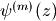.
Special cases are known as the digamma function (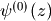),
the trigamma function (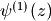), etc. The polygamma
functions are defined as the logarithmic derivatives of the gamma
function:
of , 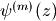.
Special cases are known as the digamma function (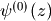),
the trigamma function (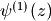), etc. The polygamma
functions are defined as the logarithmic derivatives of the gamma
function: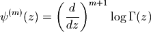
In particular, 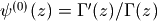. In the present implementation of psi(), the order
must be a
nonnegative integer, while the argument may be an arbitrary
complex number (with exception for the polygamma function’s poles
at 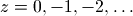).Examples
For various rational arguments, the polygamma function reduces to a combination of standard mathematical constants:
>>> from mpmath import * >>> mp.dps = 25; mp.pretty = True >>> psi(0, 1), -euler (-0.5772156649015328606065121, -0.5772156649015328606065121) >>> psi(1, '1/4'), pi**2+8*catalan (17.19732915450711073927132, 17.19732915450711073927132) >>> psi(2, '1/2'), -14*apery (-16.82879664423431999559633, -16.82879664423431999559633)
The polygamma functions are derivatives of each other:
>>> diff(lambda x: psi(3, x), pi), psi(4, pi) (-0.1105749312578862734526952, -0.1105749312578862734526952) >>> quad(lambda x: psi(4, x), [2, 3]), psi(3,3)-psi(3,2) (-0.375, -0.375)
The digamma function diverges logarithmically as 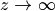, while higher orders tend to zero:
>>> psi(0,inf), psi(1,inf), psi(2,inf) (+inf, 0.0, 0.0)
Evaluation for a complex argument:
>>> psi(2, -1-2j) (0.03902435405364952654838445 + 0.1574325240413029954685366j)
Evaluation is supported for large orders
and/or large
arguments :>>> psi(3, 10**100) 2.0e-300 >>> psi(250, 10**30+10**20*j) (-1.293142504363642687204865e-7010 + 3.232856260909107391513108e-7018j)
Application to infinite series
Any infinite series where the summand is a rational function of the index
can be evaluated in closed form in terms of polygamma
functions of the roots and poles of the summand:>>> a = sqrt(2) >>> b = sqrt(3) >>> nsum(lambda k: 1/((k+a)**2*(k+b)), [0, inf]) 0.4049668927517857061917531 >>> (psi(0,a)-psi(0,b)-a*psi(1,a)+b*psi(1,a))/(a-b)**2 0.4049668927517857061917531
This follows from the series representation (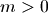)
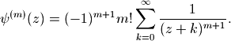
Since the roots of a polynomial may be complex, it is sometimes necessary to use the complex polygamma function to evaluate an entirely real-valued sum:
>>> nsum(lambda k: 1/(k**2-2*k+3), [0, inf]) 1.694361433907061256154665 >>> nprint(polyroots([1,-2,3])) [(1.0 - 1.41421j), (1.0 + 1.41421j)] >>> r1 = 1-sqrt(2)*j >>> r2 = r1.conjugate() >>> (psi(0,-r2)-psi(0,-r1))/(r1-r2) (1.694361433907061256154665 + 0.0j)
- mpmath.functions.digamma(z)¶
- Shortcut for psi(0,z) (the digamma function)
- mpmath.functions.trigamma(z)¶
- Shortcut for psi(1,z) (the trigamma function)
harmonic()¶
- mpmath.functions.harmonic(z)¶
If
is an integer, harmonic(n) gives a floating-point
approximation of the -th harmonic number 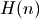, defined as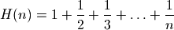
The firrst few harmonic numbers are:
>>> from mpmath import * >>> mp.dps = 15; mp.pretty = True >>> for n in range(8): ... print n, harmonic(n) ... 0 0.0 1 1.0 2 1.5 3 1.83333333333333 4 2.08333333333333 5 2.28333333333333 6 2.45 7 2.59285714285714
The infinite harmonic series
 diverges:
diverges:>>> harmonic(inf) +inf
harmonic() is evaluated using the digamma function rather than by summing the harmonic series term by term. It can therefore be computed quickly for arbitrarily large
, and even for
nonintegral arguments:>>> harmonic(10**100) 230.835724964306 >>> harmonic(0.5) 0.613705638880109 >>> harmonic(3+4j) (2.24757548223494 + 0.850502209186044j)
harmonic() supports arbitrary precision evaluation:
>>> mp.dps = 50 >>> harmonic(11) 3.0198773448773448773448773448773448773448773448773 >>> harmonic(pi) 1.8727388590273302654363491032336134987519132374152
The harmonic series diverges, but at a glacial pace. It is possible to calculate the exact number of terms required before the sum exceeds a given amount, say 100:
>>> mp.dps = 50 >>> v = 10**findroot(lambda x: harmonic(10**x) - 100, 10) >>> v 15092688622113788323693563264538101449859496.864101 >>> v = int(ceil(v)) >>> print v 15092688622113788323693563264538101449859497 >>> harmonic(v-1) 99.999999999999999999999999999999999999999999942747 >>> harmonic(v) 100.000000000000000000000000000000000000000000009